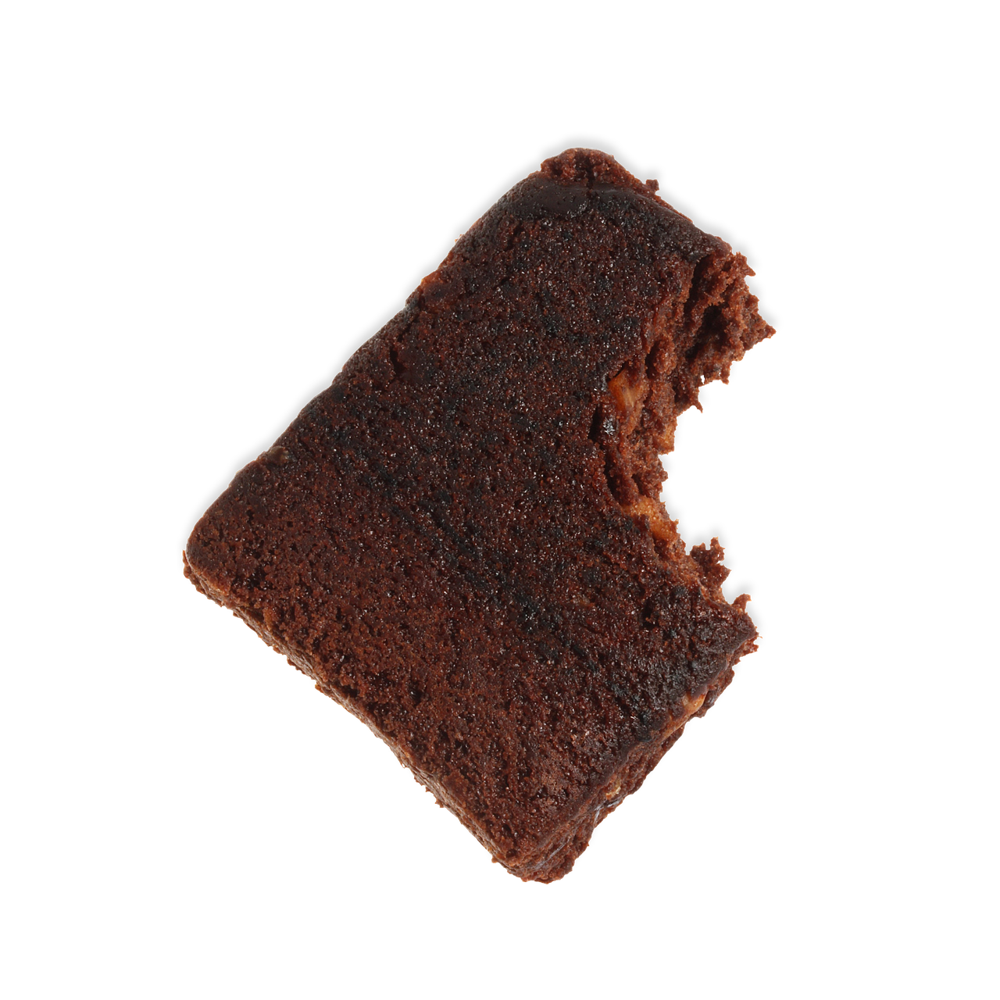

back to desserts
cinnamon chocolate protein brownies
makes 9 brownies

tools
- large bowl
- baking pan
- parchment paper
ingredients
not yet converted over to grams! i'll update it when i make it again.
- 1 cup ap flour
- 1/3 cup cinnamon protein
- 2 tablespoons coco powder
- .5 teaspoon salt
- 2/3 cup sugar
- 1 teaspoon vanilla
- 1/3 cup butter
- 2 large eggs
- .5 cup chocolate chips
steps
- set oven to 350F and grease baking pan. optionally add a piece of parchment paper to bottom of pan for easier removal.
- in large bowl, mix dry ingredients.
- add wet ingredients to dry in large bowl and mix until flour is just absorbed.
- gently fold in chocolate chips.
- pour mixture into pre-greased baking pan and place in the oven for 20 minutes or until an inserted toothpick comes out clean.
- once out of oven let cool to room temp on cooling rack, place in refrigerator overnight.
- remove from fridge and cut into 9 pieces.
back to desserts